Digital Ecosystems for Global Agriculture
Producer Co. builds complete digital ecosystems for agricultural transformation — from corporate identity and UX strategy to satellite intelligence, genomic science, and blockchain governance.
The Challenge
The legacy model prioritized massive caloric output for a growing population. For crops like rice — the primary caloric source for over half the globe — this model is no longer climatically viable. Linear, fragile, and blind to ecological complexity.
The modern paradigm relies on continuous, precision data loops to navigate climate uncertainty — ensuring both sustainability and food security at planetary scale. Real-time, adaptive, and globally integrated.
Climate DataField SensorsSatellite ImageryAI Analytics"To transform agriculture, technological intervention must be seamlessly integrated with digital communication. We must design every layer of the stack."
Producer Co. — Architecture Manifesto"The unified architecture is not a linear stack; it is a continuous flywheel of transformation — bridging human intent and computational science."
Surface to Seed · Research Framework, 2025Content Architecture
The digital interface must serve four fundamentally different stakeholders — each with distinct needs, data requirements, and interfaces.
| Dimension | Breeding Scientists | National Policymakers | Agribusinesses | Extension Services |
|---|---|---|---|---|
| Core Need | Genomic markers & phenotypic data | High-level risk assessments | Supply chain resilience data | Localized best practices |
| Technical Need | Deep-dive hubs for ORYZA2000 models & Global Rice Array | Dynamic data portals with yield forecasts | Dashboards proving ROI & blockchain-based metrics | Highly accessible, mobile-friendly interfaces |
| Interface | CRISP-integrated scientific dashboards | CRISP yield forecast platforms | Blockchain traceability metrics & ROI visualization | Climate-resilient mobile training materials |
Digital Interface Structure
Structuring the digital interface around the domains that matter most — each pillar is a distinct knowledge layer serving a distinct audience.
Dynamic maps utilizing multi-temporal Sentinel-1 and -2 data to generate seasonal yield models via CRISP. Near-real-time field monitoring at continental scale.
Scientific narratives detailing the Global Rice Array's acceleration of gene discovery for diverse environments. CRISPR-enabled germplasm engineering for climate volatility.
Case studies validating sustainability targets — including REMET-Rice methane reduction programs, AWD irrigation, and Direct Seeded Rice for GHG abatement.
Documentation on traceability, blockchain integration, and AI-driven market intelligence for agribusiness. End-to-end supply chain transparency for international buyers.
The Unified Architecture
The architecture is not linear. Each layer feeds the next in a reinforcing cycle — data feeds science, science feeds narrative, narrative builds trust, trust generates more data.
Feeds clean, reliable, findable inputs to the AI and genomic engines. Kubernetes containerization processes 3.17B field polygons at 10m resolution.
CRISP pipeline and Global Rice Array generate localized insights — crop yield predictions, genomic markers, and climate-adaptive germplasm profiles — that populate the interface.
Provides clear narrative evidence tailored to four stakeholder groups. Translates orbital and genomic data into actionable intelligence for farmers, scientists, policymakers, and agribusiness.
Secures multi-stakeholder partnerships necessary to generate more field data. UN, FAO, AFMA, and government endorsements feed back into data collection at scale.
"This continuous loop bridges human intent and computational science — turning planetary data into farmer prosperity."
Core Technology
From raw satellite backscatter to root-zone soil moisture models, from fragmented IoT telemetry to a unified Agri-Object hub, from genomic markers to CRISPR-engineered germplasm — Producer Co. designs the full technical stack.
Key Principle
"Distilling planetary noise into actionable agricultural intelligence."
Calibrated and geolocated measurements of surface radar backscatter and brightness temperatures from Sentinel-1/2 and Planet satellite constellations.
Soil moisture mapped onto a fixed Earth grid at 3 km to 36 km resolution. Standardized geophysical parameters ready for model ingestion.
Daily global composites providing a total planetary view for a complete 24-hour cycle. Near-real-time crop monitoring at continental scale.
Value-added products merging satellite observations with land surface models to estimate vital root-zone soil moisture and generate seasonal yield forecasts.
Cloud-native pipelines unify fragmented field telemetry from four data streams into a single, authoritative source of truth for all downstream analysis.
IoT devices capturing granular soil moisture and temperature metrics at the plot level. PVC monitoring pipes providing continuous telemetry.
High-frequency imagery from satellite constellations — Sentinel-1, Sentinel-2, and Planet — providing multi-temporal surface observations.
Continuous telemetry and operational logs from automated farm machinery. Real-time input tracking for resource optimization models.
Integration of real-time weather feeds and long-term climate predictive models. Regional and global climate scenario integration.
Graph Neural Networks (GNNs) model spatial and temporal market interactions to achieve ~90% crop yield prediction accuracy. Multi-Agent Reinforcement Learning (MARL) empowers autonomous agents to discover optimal planting strategies — increasing farmer income by up to 30% and cutting supply chain costs by 20%.
Smart contracts automate transparent data exchange, eliminating intermediaries and ensuring end-to-end traceability for safety certifications. Immutable records provide the verification backbone for carbon credits, ESG reporting, and international procurement. Each transaction timestamped and hash-verified.
Managing planetary scale requires data governance that is Findable, Accessible, Interoperable, and Reusable — enforced by institutional data custodians and edge-native AI.
Data assigned persistent identifiers. Metadata registered in searchable resources across IRRI DESK, FAO, and institutional data catalogues.
Data retrievable via standardized protocols. Open access where possible; secure access for sensitive genomic and commercial datasets.
AGRARIAN hybrid architecture: federated AI at the edge (local sensors) reducing reliance on continuous cloud connectivity in remote rural settings.
Kubernetes containerization and microservices ensure fault isolation. Processing 3.17B remote-sensing field polygons at 10m resolution without downtime.
Replaces post-harvest static reporting with near-real-time dynamic analysis. Achieves >90% mapping accuracy in structured irrigation schemes and >80% reliability in highly fragmented ecosystems like Kano, Nigeria. Multi-temporal Sentinel-1 and -2 data generating seasonal yield models at field scale.
A worldwide network of high-throughput field phenotyping sites deploying diagnostic populations as biological antennae — sensing changing climates through the eye of the crop itself. Accelerates gene discovery for diverse environments, targeting varieties capable of maintaining stable yields during climate extremes.
Agrobacterium-mediated transformation utilizes CRISPR/Cas9 to create novel germplasms capable of withstanding severe climate volatility. The Ideal Plant Architecture (IPA) framework optimizes tiller development, root depth, and photosynthetic efficiency simultaneously.
Research targets genes like OsCCD7 to regulate tiller development. Understanding this relationship allows breeders to synergize stress tolerance with photosynthetic efficiency — creating super-rice that maintains stable yields during floods, droughts, and natural disasters.
Process-based crop models calibrated to local conditions. Deep-dive hubs for breeding scientists requiring phenotypic data at genomic resolution.
High-throughput phenotyping platforms accelerate the identification of climate-adaptive traits across the full genetic diversity of global rice germplasm.
Novel germplasms bred for simultaneous tolerance to flooding, drought, heat, and submergence — critical for fragile delta and lowland ecosystems.
Return on Architecture
Every layer of the ecosystem delivers measurable, compounding impact — from the satellite to the smallholder farmer.
Satellite time-series and predictive modelling de-risk global sourcing and stabilise supply chains facing climate volatility. 20% reduction in supply chain disruption via blockchain transparency.
Optimising critical resource usage — water, fertiliser, labour — through precision field scouting and automated AI advisories. 20% reduction in water usage via AWD resource management.
Rigorous, immutable data for measurement, reporting, and verification of climate conservation programs. 30–53% methane reduction via AWD. 60% total GHG footprint reduction using Direct Seeded Rice.
AI-driven insights protecting smallholder farmers from market volatility — income increase of 10–20% through direct B2B ESG market access. 30% income increase via MARL-optimised planting strategies.
Brand Design System
Connects the Green Revolution legacy to future-ready innovation. The seed-network motif bridges biological heritage and digital intelligence across cultures.
Grounds high-tech computational solutions in the natural environment — sky blue, soil brown, and leaf green.
Visual shorthand for carbon sequestration, pest risk, water stress, and yield potential — communicating across any language and literacy level.
Authoritative serif for research and institutional communication. Accessible sans-serif for digital tools and farmer-facing platforms.
"Brand voice is no longer about static preservation; it is an advocacy-oriented rhetoric of active, collaborative sustainability — reflecting the shift from genetic preservation to open-source utilization."
Global Reach
>90% satellite mapping accuracy in structured irrigation schemes across South and Southeast Asia's rice belts. Real-time crop monitoring replacing post-harvest static reports.
>80% mapping reliability in highly fragmented ecosystems like Kano, Nigeria. Diagnostic crop populations acting as biological climate sensors in remote rural settings.
Asia-Pacific Food Market Authority — 25 food market units across Thailand, China, India, and Vietnam. Est. 1983, backed by FAO & UNESCAP. Gateway to the UN Global Marketplace.
Certified sustainable suppliers gain first-hand access to large-scale UN procurement for humanitarian aid and regional food security. ESG-linked supplier financing reduces transition costs.
Strategic Technology Partner
Producer Co. partners with Merlinium to deliver the physical IoT layer of the agricultural ecosystem — bringing predictive intelligence to the machines that process, store, and move the world's food supply.
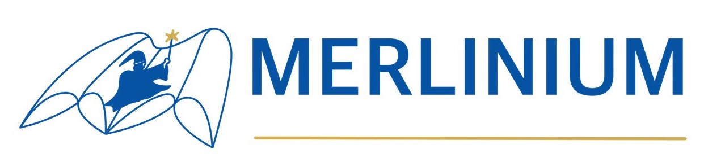
"Physics is more powerful than you think"
Predictive Maintenance Sensor & AI · merliniumiot.com
Merlinium develops AI-powered IoT sensors that monitor industrial machinery in real time — detecting mechanical and electrical anomalies before they cause costly breakdowns. With over 100 factory clients across Thailand's food, automotive, and construction sectors, Merlinium is the predictive intelligence backbone of modern agricultural supply chains.
Monitors motors, pumps, gearboxes, blowers, and all rotating machinery. Spectrum analysis with embedded AI detects bearing wear, misalignment, and imbalance. Battery-powered LoRa connectivity — no wiring required. IP-rated for indoor and outdoor agricultural environments.
Detects harmonic currents, phase unbalance, and electrical spikes across panels, solar arrays, inverters, boilers, and transformers. Up to 3 current probe inputs. Provides historical consumption data and real-time anomaly alerts — preventing short-circuit and fire risk in processing facilities.
Aggregates all sensor data into a unified, real-time dashboard accessible on mobile, tablet, and desktop 24/7. Supports cloud server and on-premise deployment. Integrates via API into Producer Co.'s Agri-Object Hub for full supply chain visibility.
Merlinium's machine telemetry feeds directly into Producer Co.'s Agri-Object Hub as the Mechanical Data stream — enabling predictive analytics across rice mills, irrigation pumps, drying equipment, and food processing plants throughout the global supply chain. When a sensor detects an anomaly, the signal propagates through the full FAIR Data Infrastructure, triggering automated maintenance scheduling before downtime occurs.
Visit Merlinium →Sustainability Framework
A systemic transformation that redesigns the ecological and financial architecture — moving from linear, fragmented production to a circular, integrated future built for human survival and global food security.
The Linear & Fragmented Past
The Circular & Integrated Future
Transformation is not merely upgrading technology — it is redesigning the ecological and financial architecture for human survival.
01
NbS — Ecological Foundation
Landscape-scale integration driven by the IUCN Global Standard, ensuring physical resilience, root porosity, and water security across rice-growing regions.
02
ESG — Governance Engine
Transparent dMRV, strict ILO labor safeguards, and blended finance mechanisms that translate farm data into capital — elevating the governance standard far beyond traditional SRP.
03
SDGs — Institutional Anchor
Connecting verified sustainable products directly to UN procurement networks (UNGM) and high-value international buyers — with regional governance through FAO, UNESCAP, and AFMA.
Layer 1
The Physical Edge
IoT soil/water sensors, Earth Observation (EO) satellite modeling via CRISP, and drone mapping providing real-time field intelligence.
Layer 2
The Digital Crucible
AI-driven verification against Verra VM0051 & Gold Standard. Smart contracts ensure immutability and prevent ESG washing at the source.
Layer 3
The Financial Output
High-integrity Carbon Credits and Certified Sustainable Produce providing Net-Zero corporations with legally defensible assets.
High-integrity ESG data is the collateral that unlocks transition finance.
AWD — Alternate Wetting & Drying
30–53%
Methane Reduction
Reduces water use by 20–40%; maintains or boosts yield up to 40%. Highly scalable in irrigated regions with precise water control.
DSR — Direct Seeded Rice
35–50%
Methane Reduction
Avoids initial flooding, cuts labor by 25–30%, and shortens cultivation cycles. Requires specific seeding machinery and resilient genetics.
Residue Management & Biochar
~15%
Baseline Reduction + Carbon Sequestration
Restores soil structure, improves air quality by eliminating burning. Requires localized logistical hubs for husk processing.
Verified Sustainable Rice Market
320B
USD Market Opportunity
The total addressable market for verified sustainable produce — connecting Retail & B2B, Genetics, Processing, and Cultivation nodes.
01
Implementation of NbS (AWD/DSR) and capturing physical data — the soil-level foundation of all verified output.
02
The Impact Chain Pathway standardizing regional output and formalizing the data into internationally recognized metrics.
03
The Data Custodian locking in ESG risk classification using Green, Red, and Black lists — preventing greenwashing at the source.
A
Direct supply to the UN Global Marketplace for humanitarian procurement and regional food security.
B
Direct supply to corporate ESG/SDG buyers and international carbon markets.
All 13 slides from the Sustainable Rice Transformation framework. Click any to view full size.
01 — Systemic Transformation Framework
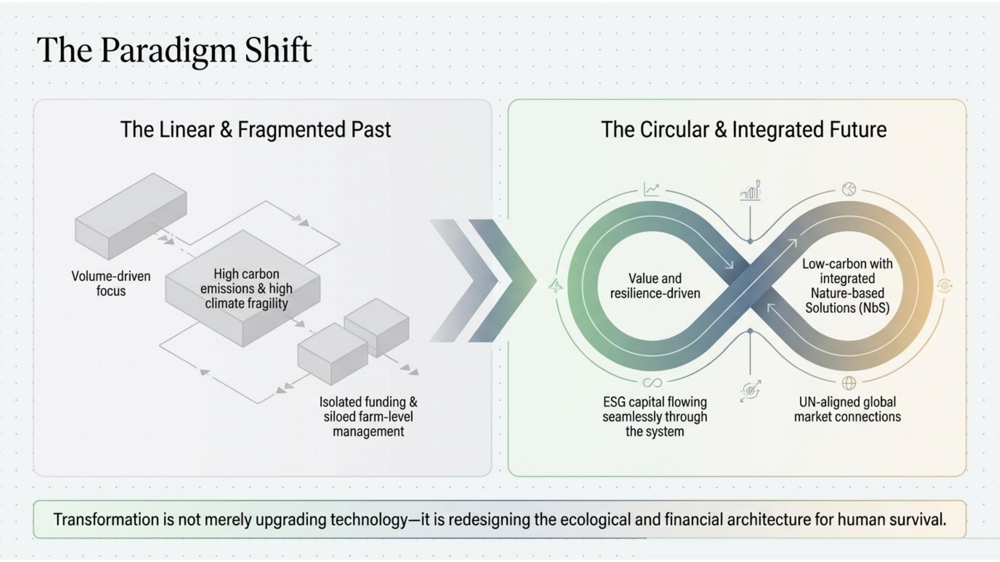
02 — The Paradigm Shift
03 — The Architectural Blueprint
04 — Pillar 1: Landscape-Scale Integration (NbS)
05 — Cultivation Interventions & Methane Reduction
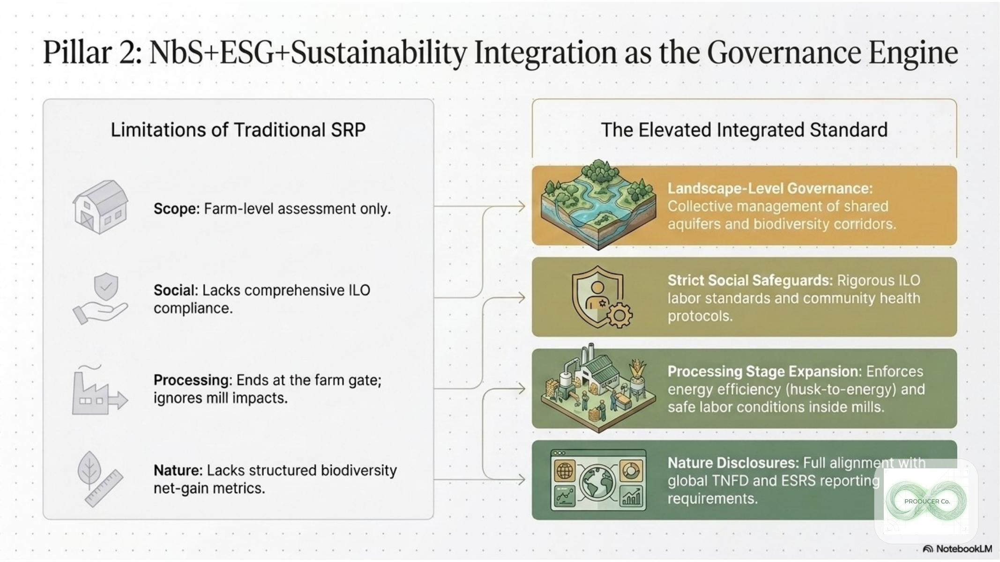
06 — Pillar 2: NbS+ESG Governance Engine
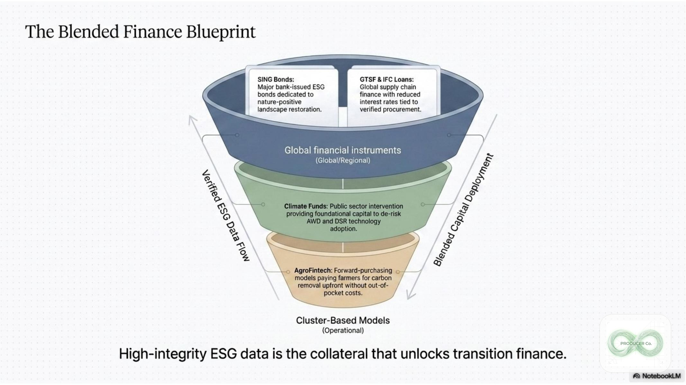
07 — The Blended Finance Blueprint
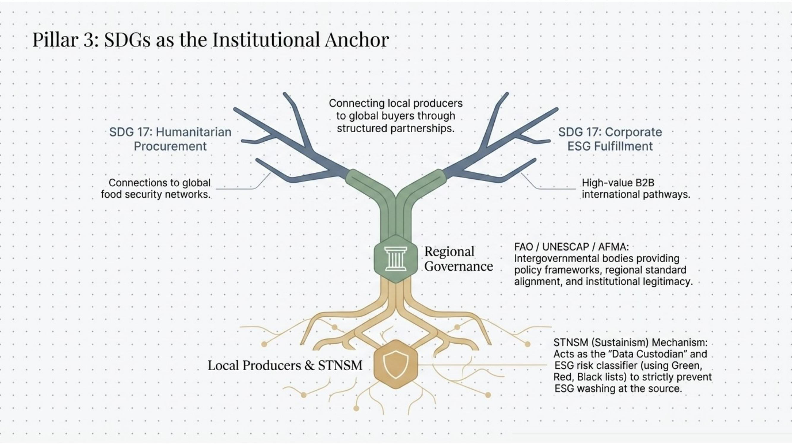
08 — Pillar 3: SDGs as the Institutional Anchor
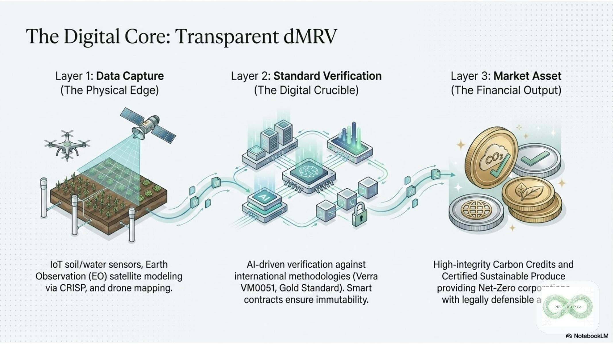
09 — The Digital Core: Transparent dMRV
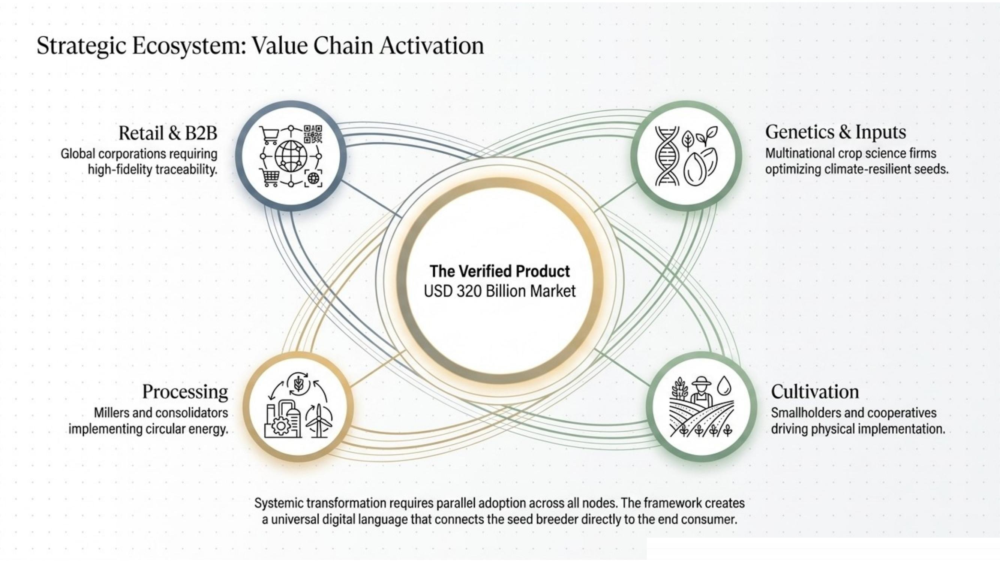
10 — Strategic Ecosystem: Value Chain Activation
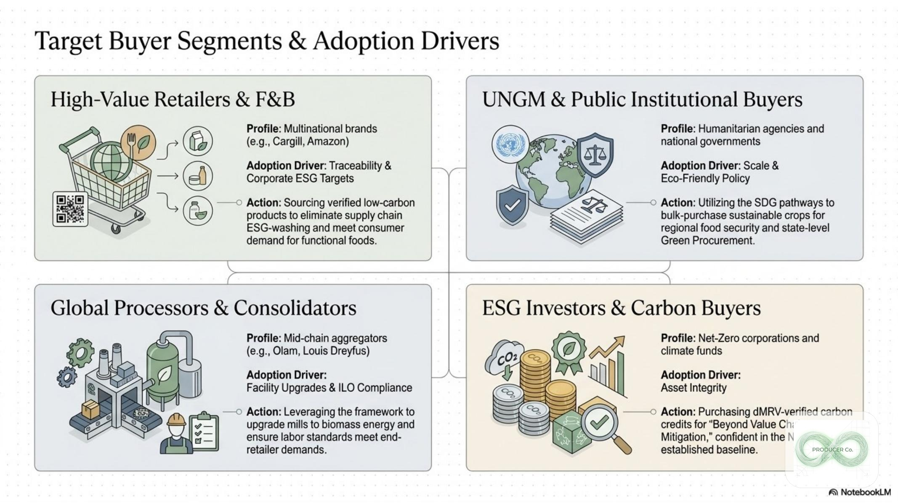
11 — Target Buyer Segments & Adoption Drivers
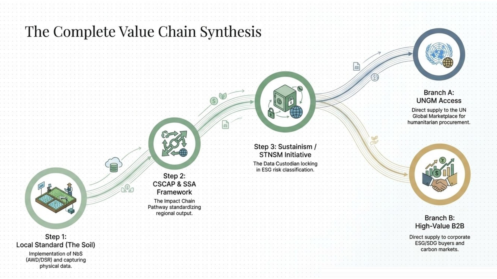
12 — The Complete Value Chain Synthesis
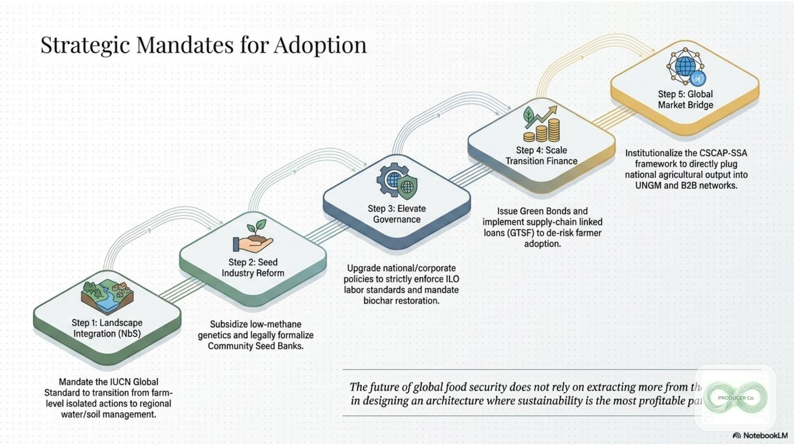
13 — Strategic Mandates for Adoption
The future of global food security does not rely on extracting more from the earth, but in designing an architecture where sustainability is the most profitable path forward.
Strategic Mandate — Producer Co. Sustainability FrameworkResearch Deck
All 15 slides from the original research deck. Click any slide to view full size.
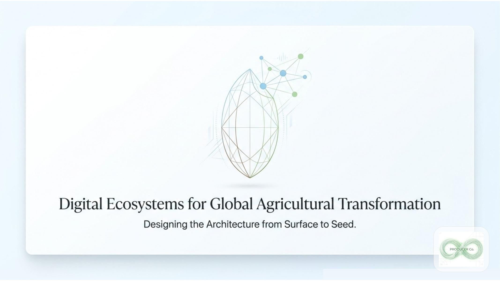
01 — Digital Ecosystems for Global Agricultural Transformation
02 — Industrial Scale to Digital Resilience
03 — The Ecosystem Stack
04 — Corporate Identity as Strategic Enabler
05 — Brand Symbolism: Preservation to Open-Source
06 — Content Architecture: Bridging Science & Adoption
07 — Four Core Pillars of Agricultural Transformation
08 — Orbital and Biological Intelligence
09 — Molecular Engineering & Ideal Plant Architecture
10 — Planetary Noise to Actionable Intelligence
11 — Agri-Object Model Integration Hub
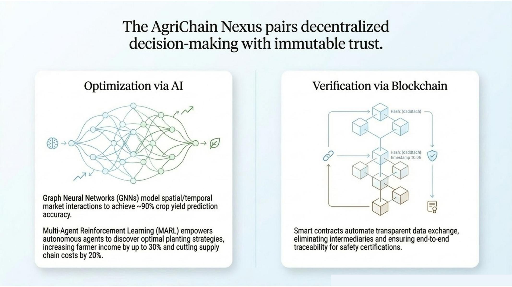
12 — AgriChain Nexus: AI & Blockchain
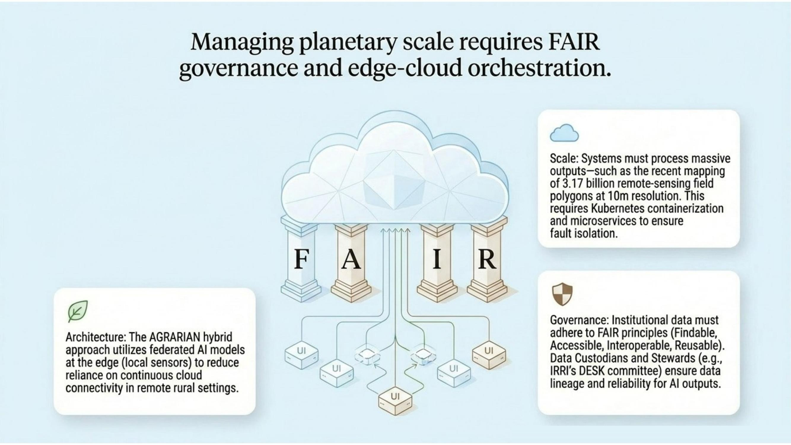
13 — FAIR Governance & Edge-Cloud Orchestration
14 — The Unified Architecture Flywheel
15 — Return on Architecture: High-Value Outcomes
Partner With Producer Co.
Join us in designing the complete digital ecosystem — from brand identity to satellite intelligence — that will feed the world through climate uncertainty.